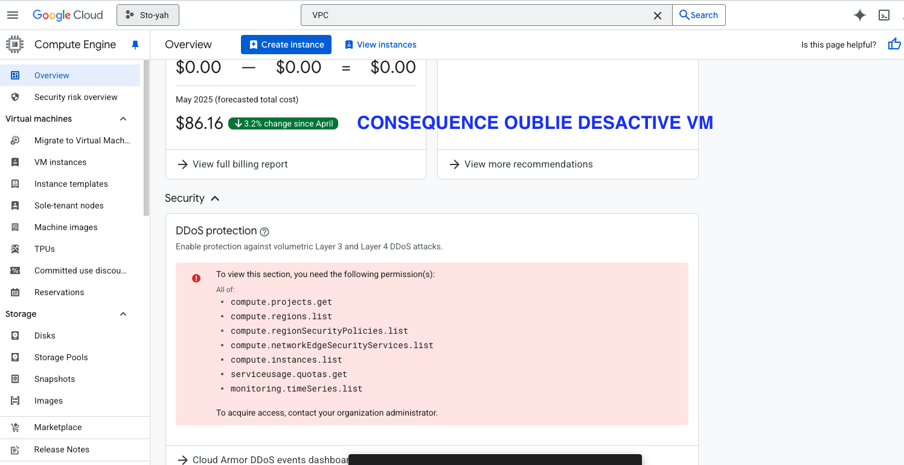
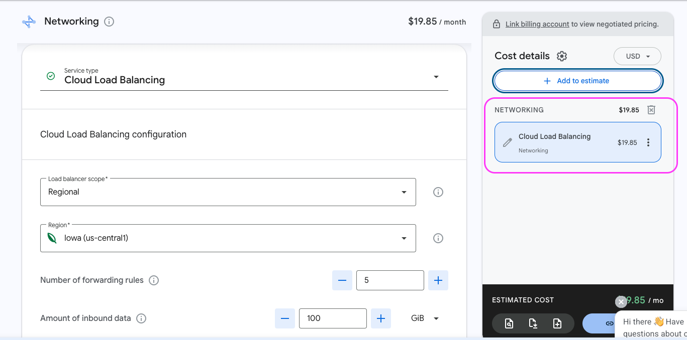
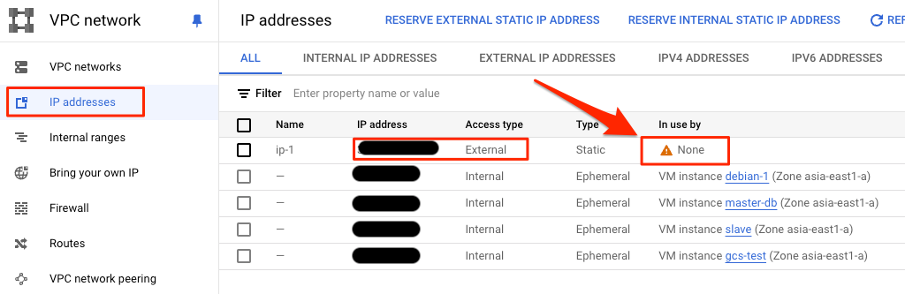
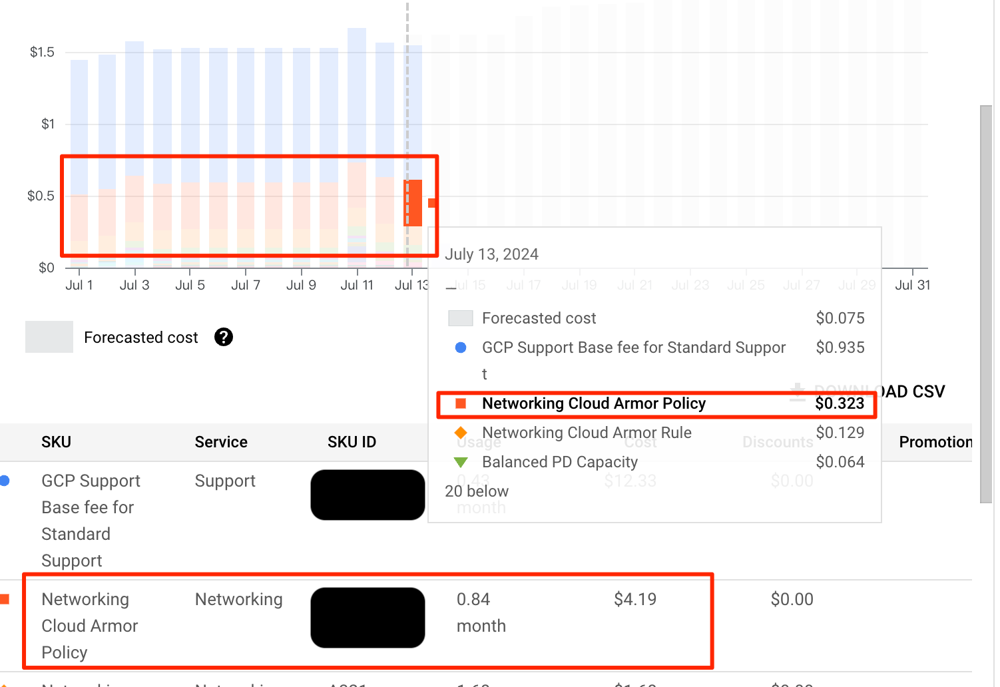
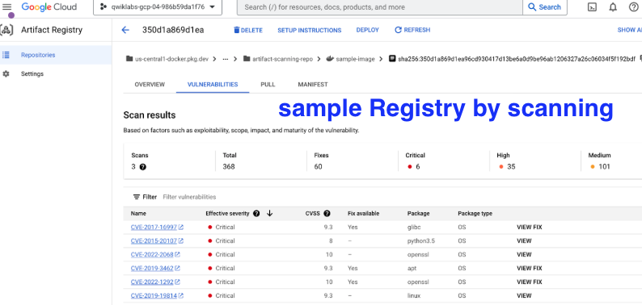
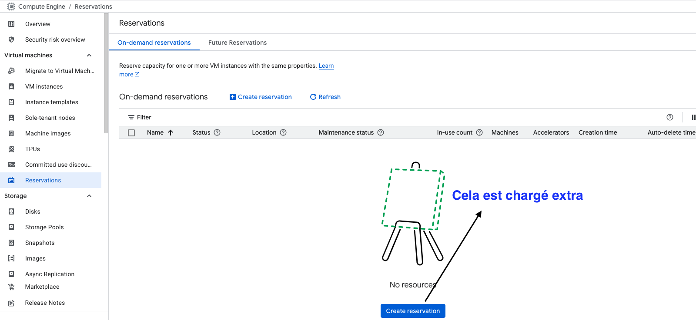
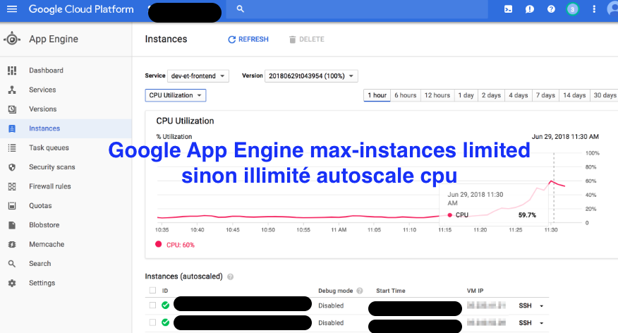

Pièges de facturation fréquents sur Google Cloud Platform (GCP) — À surveiller absolument !
19 Mai 2025, 16:25 CEST
Un guide pratique pour éviter les coûts cachés et garder ton budget sous contrôle.
Google Cloud Platform (GCP) facture au réel, selon ta consommation.
Sur le papier, c’est très avantageux : si tu n’utilises pas un service, tu ne payes pas.
Mais… attention !
Parfois, tu penses ne rien utiliser, mais Google considère que oui.
Et sans que tu t’en rendes compte, la facture grimpe…
Tes économies s’envolent, sans que tu comprennes vraiment pourquoi.
Pour t’éviter ces mauvaises surprises, voici une liste des principales sources de coûts cachés et souvent négligées sur GCP.
Un petit guide pratique pour éviter de te faire facturer des services inutilisés.
1. Instances Compute Engine oubliées en marche

Le grand classique des coûts imprévus.
Même après des années d’utilisation, il m’arrive encore d’oublier des VM allumées.
Si tu as plusieurs projets GCP, la vigilance est de mise, car ces machines peuvent être disséminées un peu partout.
Pense à vérifier régulièrement ta liste d’instances actives !
2. Load Balancer laissé en place

Les Load Balancers facturent via les Forwarding Rules, à l’heure.
Même s’ils ne sont plus connectés à des machines backend, ils coûtent environ 0,025 USD/heure (soit 18 USD/mois).
Donc, mieux vaut supprimer ceux dont tu n’as plus besoin.
3. Adresses IP statiques externes non supprimées

Une IP statique associée à une VM est relativement peu chère (0,0005 USD/heure).
Mais une IP statique non utilisée coûte beaucoup plus cher : 0,01 USD/heure, soit 7,2 USD par mois.
Il vaut donc mieux libérer les IP inutilisées.
4. Serverless Access Connector
Utilisé par App Engine, Cloud Run, Cloud Functions pour accéder aux VM.
Il lance automatiquement 2 VM, donc engendre des coûts même si tu ne t’en rends pas compte.
Ce service n’apparaît pas dans l’application mobile Google Cloud, ce qui rend sa suppression difficile depuis un smartphone.
5. Politiques et règles Cloud Armor

Même sans backend associé, laisser une Policy Cloud Armor active entraîne des coûts :
5 USD/mois par Policy
1 USD/mois par Rule
Ce sont des frais assez cachés, souvent par défaut après la création d’un Load Balancer.
Google impose cela sans trop demander, ce qui peut surprendre.
6. Images de machines dépréciées (Depreciated Images)

Les images système anciennes ou supprimées peuvent toujours générer des coûts.
Elles sont souvent cachées dans la console, surtout si tu ne coches pas “Afficher les images obsolètes”.
Un piège facile à oublier.
7. Réservations (Reservations)

Ce système te permet de “réserver” des ressources CPU et RAM à l’avance pour tes VM, afin d’éviter qu’elles soient utilisées par d’autres.
Mais attention : même si tu n’allumes pas la VM, Google te facture dès la réservation.
Les disques et IP ne sont pas facturés à ce stade.
8. Autoscaling sans limite sur Google App Engine (GAE)

Dans le fichier app.yaml de ton application GAE, il faut impérativement définir une limite max_instances.
Sinon, en cas de pic de trafic, GAE va automatiquement lancer un grand nombre d’instances pour gérer la charge — et ta facture peut exploser.
Le nombre d’instances actives se trouve dans la console GAE, onglet “Exécutions” → “Instances”.
En résumé
Vérifie régulièrement tes ressources actives
Active les alertes de facturation dans la console GCP
Supprime ce que tu n’utilises pas
Sois vigilant sur les services “cachés” et automatiques
Si tu connais d’autres pièges ou frais cachés sur GCP, n’hésite pas à les partager !
Garder la maîtrise de son budget cloud, c’est possible.
Mais ça demande un peu de discipline et d’attention…
Ne laisse pas Google te prélever sans que tu sois au courant !
🔁 Repostez si vous pensez que tout utilisateur de GCP devrait connaître ces pièges.
P.S. Quel est le piège GCP qui t’a le plus surpris ?
Partagez cet article :